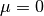

|
A Discrete-Event Network Simulator
|
Models |
|
|
A Discrete-Event Network Simulator
|
Models |
To test and validate the ns-3 Building Pathloss module, some test suites is provided which are integrated with the ns-3 test framework. To run them, you need to have configured the build of the simulator in this way:
./waf configure --enable-tests --enable-modules=buildings
./test.py
The above will run not only the test suites belonging to the buildings module, but also those belonging to all the other ns-3 modules on which the buildings module depends. See the ns-3 manual for generic information on the testing framework.
You can get a more detailed report in HTML format in this way:
./test.py -w results.html
After the above command has run, you can view the detailed result for each test by opening the file results.html with a web browser.
You can run each test suite separately using this command:
./test.py -s test-suite-name
For more details about test.py and the ns-3 testing framework, please refer to the ns-3 manual.
The test suite buildings-helper checks that the method BuildingsHelper::MakeAllInstancesConsistent () works properly, i.e., that the BuildingsHelper is successful in locating if nodes are outdoor or indoor, and if indoor that they are located in the correct building, room and floor. Several test cases are provided with different buildings (having different size, position, rooms and floors) and different node positions. The test passes if each every node is located correctly.
The test suite building-position-allocator feature two test cases that check that respectively RandomRoomPositionAllocator and SameRoomPositionAllocator work properly. Each test cases involves a single 2x3x2 room building (total 12 rooms) at known coordinates and respectively 24 and 48 nodes. Both tests check that the number of nodes allocated in each room is the expected one and that the position of the nodes is also correct.
The test suite buildings-pathloss-model provides different unit tests that compare the expected results of the buildings pathloss module in specific scenarios with pre calculated values obtained offline with an Octave script (test/reference/buildings-pathloss.m). The tests are considered passed if the two values are equal up to a tolerance of 0.1, which is deemed appropriate for the typical usage of pathloss values (which are in dB).
In the following we detailed the scenarios considered, their selection has been done for covering the wide set of possible pathloss logic combinations. The pathloss logic results therefore implicitly tested.
In this test we test the standard Okumura Hata model; therefore both eNB and UE are placed outside at a distance of 2000 m. The frequency used is the E-UTRA band #5, which correspond to 869 MHz (see table 5.5-1 of 36.101). The test includes also the validation of the areas extensions (i.e., urban, suburban and open-areas) and of the city size (small, medium and large).
This test is aimed at validating the COST231 model. The test is similar to the Okumura Hata one, except that the frequency used is the EUTRA band #1 (2140 MHz) and that the test can be performed only for large and small cities in urban scenarios due to model limitations.
This test validates the 2.6 GHz Kun model. The test is similar to Okumura Hata one except that the frequency is the EUTRA band #7 (2620 MHz) and the test can be performed only in urban scenario.
This test is aimed at validating the ITU1411 model in case of line of sight within street canyons transmissions. In this case the UE is placed at 100 meters far from the eNB, since the threshold for switching between LoS and NLoS is left to default one (i.e., 200 m.).
This test is aimed at validating the ITU1411 model in case of non line of sight over the rooftop transmissions. In this case the UE is placed at 900 meters far from the eNB, in order to be above the threshold for switching between LoS and NLoS is left to default one (i.e., 200 m.).
This test is aimed at validating the ITUP1238 model in case of indoor transmissions. In this case both the UE and the eNB are placed in a residential building with walls made of concrete with windows. Ue is placed at the second floor and distances 30 meters far from the eNB, which is placed at the first floor.
This test validates the outdoor to indoor transmissions for large distances. In this case the UE is placed in a residential building with wall made of concrete with windows and distances 2000 meters from the outdoor eNB.
This test validates the outdoor to indoor transmissions for short distances. In this case the UE is placed in a residential building with walls made of concrete with windows and distances 100 meters from the outdoor eNB.
This test validates the outdoor to indoor transmissions for very short distances. In this case the eNB is placed in the second floor of a residential building with walls made of concrete with windows and distances 100 meters from the outdoor UE (i.e., LoS communication). Therefore the height gain has to be included in the pathloss evaluation.
This test validates the outdoor to indoor transmissions for short distances. In this case the eNB is placed in the second floor of a residential building with walls made of concrete with windows and distances 500 meters from the outdoor UE (i.e., NLoS communication). Therefore the height gain has to be included in the pathloss evaluation.
The test suite buildings-shadowing-test is a unit test intended to verify the statistics distribution characteristics of the shadowing are the one expected. The shadowing is modeled according to a normal distribution with mean  and variable standard deviation  , according to models commonly used in literature.
The test generates 10,000 samples of shadowing by subtracting the deterministic component from the total loss returned by the BuildingPathlossModel. The mean and variance of the shadowing samples are then used to verify whether the 99% confidence interval is respected by the sequence generated by the simulator.
, according to models commonly used in literature.
The test generates 10,000 samples of shadowing by subtracting the deterministic component from the total loss returned by the BuildingPathlossModel. The mean and variance of the shadowing samples are then used to verify whether the 99% confidence interval is respected by the sequence generated by the simulator.